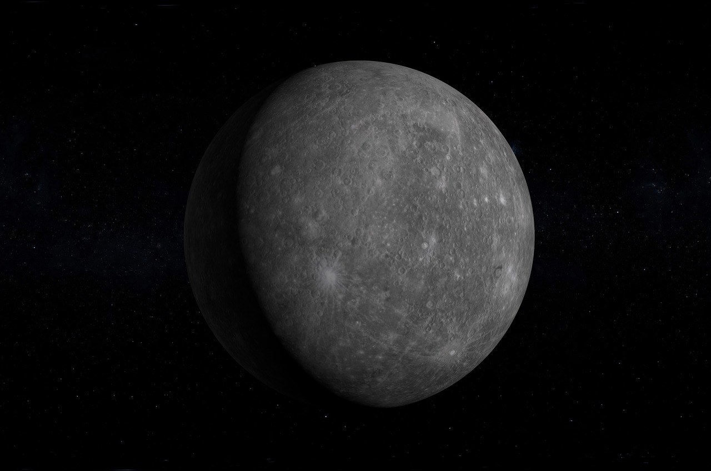

Überblick über den Planeten Merkur
Der Merkur ist ein Gesteinsplanet und der kleinste Planet in unserem Sonnensystem. Als erster Planet in der Umlaufbahn um die Sonne verfügt er über einzigartige Eigenschaften, die ihn zu einem faszinierenden Forschungsobjekt machen. Unsere Mission bei Novus Space Exploration ist es, die Geheimnisse des Merkurs zu enthüllen und unser Verständnis über die Entstehung und Entwicklung der Planeten zu vertiefen.
Herausforderungen der Merkur-Erforschung
Die extreme Nähe zur Sonne stellt eine große Herausforderung für Raumfahrtmissionen zum Merkur dar. Bei Novus Space Exploration haben wir innovative Technologien entwickelt, um diese extremen Bedingungen zu überwinden. Unsere Raumsonden sind darauf ausgelegt, den intensiven Sonnenstrahlen standzuhalten und gleichzeitig hochpräzise Messungen und Beobachtungen durchzuführen.
Wissenschaftliche Ziele
Die wissenschaftlichen Ziele unserer Merkur-Missionen sind vielfältig. Wir möchten mehr über die geologische Zusammensetzung des Planeten erfahren, seine Oberflächeneigenschaften kartieren und die Dynamik seiner Atmosphäre verstehen. Durch hochauflösende Bilder und umfassende Datenanalysen tragen wir dazu bei, den Ursprung und die Entwicklung des Merkurs besser zu begreifen.
Technologische Innovationen
Novus Space Exploration ist stolz darauf, führend in der Entwicklung innovativer Raumfahrttechnologien zu sein. Unsere Raumsonden sind mit hochmodernen Instrumenten ausgestattet, darunter Kameras, Spektrometer und Sensoren, die es uns ermöglichen, detaillierte und präzise Daten von der Oberfläche und der Umgebung des Merkurs zu sammeln.
Zukunftsaussichten
Die Erforschung des Merkurs ist ein fortlaufender Prozess, und bei Novus Space Exploration arbeiten wir ständig an neuen Missionen und Technologien, um unser Wissen über diesen faszinierenden Planeten zu erweitern. Wir sind fest davon überzeugt, dass die Erkenntnisse, die wir durch unsere Missionen gewinnen, nicht nur unser Verständnis des Merkurs vertiefen, sondern auch wichtige Impulse für die Erforschung anderer Planeten in unserem Sonnensystem und darüber hinaus liefern werden.
Begleiten Sie uns auf unserer Reise zu den Sternen und entdecken Sie mit Novus Space Exploration die faszinierende Welt des Merkurs!